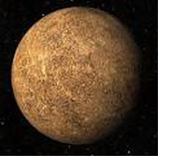

|
Меркурий в гороскопе
Меркурий в знаках зодиака, для человека играет очень важную роль. Эта небольшая по своему размеру планета отвечает за коммуникабельность и интеллект, рациональное мышление, любопытство и память.
Еще Меркурий способен руководить умом, речью, умением человека писать, его путешествиями и различного рода поездками. Иногда по состоянию здоровья, настроению, характеру и другим наклонностям человека, можно определить, как на него повлиял Меркурий и в каком знаке зодиака он находился в момент его рождения.
Меркурий может наделить человека, как положительными качествами, так и отрицательными, ведь эта планета может двигаться как по часовой стрелке, так и против.
Характеристика Меркурия в Весах представлена ниже:
Меркурий в Весах
Одно из Ваших больших достоинств - способность видеть обе стороны медали, достигать компромисса, примеряя стороны, придерживающиеся противоположных точек зрения. Вы тактичны, благоразумны, легко общаетесь с людьми, как на производстве, так и в личных отношениях. Вы человек объективный, из вас получится прекрасный консультант, умелый посредник, литературный агент, импресарио, представитель по делам печати. Вы всегда стоите за честность и стремитесь к тому, чтобы между людьми устанавливались гармоничные отношения или, по крайней мере, мирное сосуществование. Ваша дипломатичность приносит зримые плоды и в деловом плане, и в общении с окружающими. Обладая тонким эстетическим чутьем, вы можете добиться успеха в области искусства или культуры. Хотя вы и дружелюбны, рациональны и обладаете широкими взглядами, но можете проявлять жесткость, когда речь идет о ваших собственных принципах. Вы не выносите лжи, а также стараетесь делать правильные суждения и во всем достигать полного равновесия. Не любите поспешных (решений, ненавидите ссоры и пытаетесь через дискуссию прийти к совместному решению. Жаждете интеллектуальных достижений, любите искусство, обладаете обостренным осязанием и любите бывать в обществе рафинированных и уважаемых людей с хорошими манерами. Грубое поведение и нелепая манера одеваться раздражают вас. Вы во всем стремитесь к совершенству, и поэтому иногда с вами трудно жить. Вас интересует поведение и мышление других людей, поэтому такая позиция Меркурия благоприятна для профессий, подразумевающих контакты и сотрудничество с людьми, особенно для психологов, а также для дипломатов и всех областей, где человек выступает в роли судьи. Если в гороскопе недостаточно вызывающих аспектов Меркурия, вы можете быть слишком поверхностны, безлики и безосновательны.
|


 Тайна имени
Тайна имени Меркурий в знаке Весы
Меркурий в знаке Весы